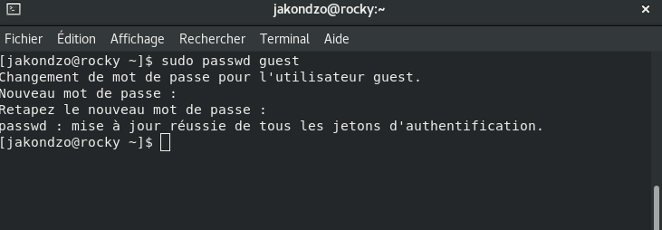
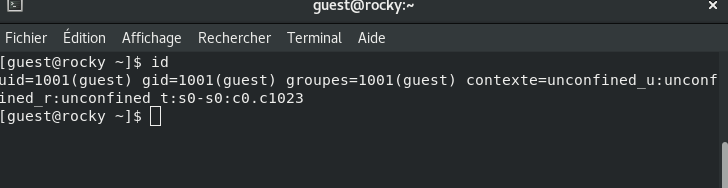
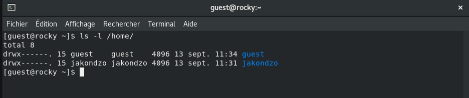
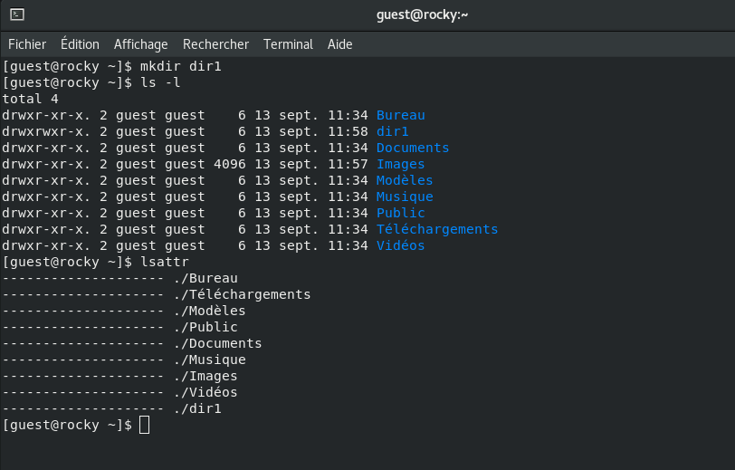

Получение практических навыков работы в консоли с атрибутами файлов,
закрепление теоретических основ дискреционного разграничения доступа в
современных системах с открытым кодом на базе ОС Linux.
2. Выполнение лабораторной
работы
Создал учётную запись пользователя guest (использую учётную запись
администратора) с помощью команды sudo useradd guest (рис.
1)
Рис. 1: Создание новой учётной
записи
Задал пароль для пользователя guest (использую учётную запись
администратора): passwd guest. (рис. 2)

Рис. 2: Введение пароля
Вошёл в систему от имени пользователя guest. (рис. 3)
Рис. 3: Вход в систему
Определил директорию, в которой вы находитесь, командой
pwd. (рис. 4)
Рис. 4: Определение
директории
Уточнил имя пользователя командой whoami. (рис. 5)
Рис. 5: Уточнение имени
пользователя
Уточнил имя пользователя, группу, а также группы, куда входит
пользователь, командой id. (рис. 6)

Рис. 6: Вывел данные
пользователя
Сравнил полученную информацию об имени пользователя с данными,
выводимыми в приглашении командной строки.
Просмотрел файл /etc/passwd командой cat /etc/passwd.
(рис. 7), (рис. 8) и (рис. 9)
Определил существующие в системе директории командой ls -l
/home/. (рис. 10)

Рис. 10: Существующие
директории
Проверил установленные расширенные атрибуты на поддиректориях,
находящихся в директории /home, командой lsattr /home.
(рис. 11)
Рис. 11: Расширенные
атрибуты
Создал в домашней директории поддиректорию dir1
командой mkdir dir1. (рис. 12)

Рис. 12: Создание директории
dir1
Снял с директории dir1 все атрибуты командой chmod 000
dir1. (рис. 13)
Рис. 13: Снятие атрибутов
Попытался создать в директории dir1 файл file1 командой echo
“test” > /home/guest/dir1/file1, но отказали в доступе.
(рис. 14)
Рис. 14: Попытка создания файла
file1
Выводы
В результате лабораторной работы мной были получены навыки работы с
атрибутами файлов, закреплены знания о правах доступа в системах на базе
ОС Linux, а также были выявлены минимальные необходимые права доступа
для выполнения операций над файлами и директориями.